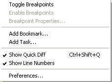
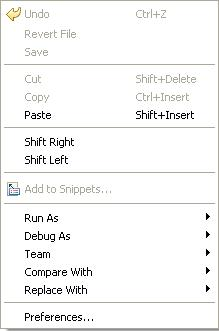
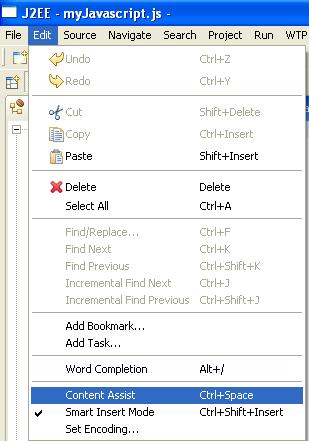
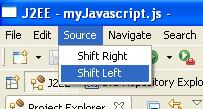
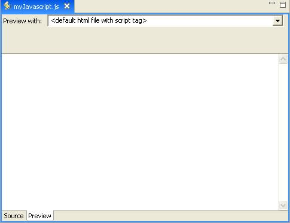
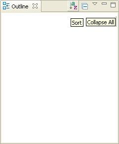
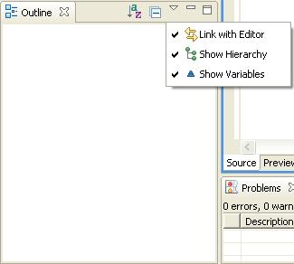

Javascript Editor
Prerequisites:
- Open the J2EE Perspective if it is not already open.(Window
->Open Perspective -> J2EE)
- Create a new J2EE web project if it does not already exist. (File
->New ->J2EE Web Project)
- Create and open a JavaScript file if it does not already exist
(File ->New ->Other ->Web ->Javascript)
Steps:
- Verify the translation of the labels for the 2 tabs (Source,
Preview) at the bottom of the editor.
- Select the Source tab.
- Position the mouse anywhere in the gray margin area on the left and
press mouse button 2.
- Verify the translation of:
- Toggle Breakpoints
- Enable Breakpoints
- Breakpoint Properties...
Note: Translations other menu items are covered by IES.

- Position the mouse somewhere in the content area of the Source page
and press mouse button 2.
- Verify the following items in the context menu that appears
(including cascading menus), which is shown below:
- Undo/Undo Text Change
- Cut
- Paste
- Add to Snippets...
Note: Other menu items are covered by IES.

- Select Edit from the menu bar.
- Verify the Content assist menu item.
Note: Translations for other menu items are covered by IES.

- Select Source from the menu bar.
- Verify all menu items.

- Select the Preview tab at the bottom of the JavaScript editor.
- Verify the translations on Preview tab
Note: this particular JavaScript file should have nothing to be
previewed.

- In the Outline view, hover over toolbar items and verify:

- Click on the Outline view Menu (the triangle button).
- Verify the menu items:
- Link with Editor
- Show Hierarchy
- Show Variables

- Close the editor, discarding any changes.